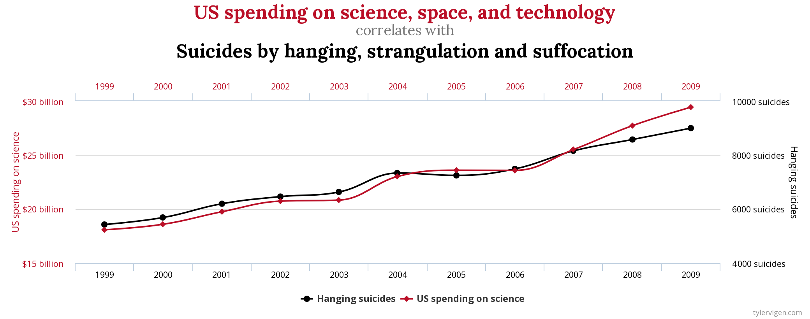

Chapter 6 Stationarity
6.1 Time Series Operators
This course does not provide mathematical foundations of time series analysis, but it is important to know what are the fundamental time series operators often used in time series analysis.
What is an operator? Anyone who has studied mathematics has encountered the idea of an operator. Operators transform variables and functions. For instance, a simple example is the operator of squaring. Time series operators transform a time series into a new time series.
Among the operators that are used in time series analysis, three are especially important:
- The backshift operator (denoted as L or B), also known as lag operator
- The expectations operator E, also known as lead operator
- The difference, written as ∆ and which can be also written using the backshift operator.
The backshift (lag) operator shifts the values of time series one or more time units behind.
 The expectation operator (lead), shifts the values of time series one or more time units ahead.
The expectation operator (lead), shifts the values of time series one or more time units ahead.

The difference operator can be represented in terms of the lag operator B and transforms each value of a time series in the difference between the value itself and the value behind it: ∆Yt = Yt - Yt-1.
These operators are fundamental in the mathematics of time series analysis and play a fundamental role in the practice of time series analysis.
6.2 Stationarity
A recurring concept in time series analysis is stationarity. Stationarity is a propriety of time series data often required to apply specific statistical techniques.
A process is defined as stationary if it is homogeneous, if it has no distinguished point in times and, in other words, its statistical proprieties of the ensemble are the same for any point in time. There are more or less stringent definition of stationarity, but the most often used for pratical purposes is the so-called weak-stationarity. In this sense, a time series is said to be stationary if there is:
- time invariant mean (no systematic change in mean, or no trend) and no periodic variations (seasonality)
- time invariant variance (no systematic change in variance over time);
- time invariant auto-correlation
As other assumptions required by statistical analysis, stationarity is not very often present in real data, and appropriate transformations are possible to reach stationarity before starting the analysis.
Stationarity is important because its absence (non-stationarity) can cause issues in time series analysis. For instance, spurious correlation. When two time series share a common trend, that is, their means varies with times, they could appear strongly correlated even though there is no real correlation between them. Transforming the non-stationary series in stationary ones (by detrending them, in the particular case of this example), allows the researcher to calculate a more appropriate correlation between them.
Granger and Newbold (1974) in the paper “Spurious regression in econometrics” wrote about the problem of spurious regression, in which estimates of relationships between non-stationary series or variables could give nonsensical results by showing statistically significant relationships when they did not really exist.

6.2.1 White Noise and Random Walk
What is the shape of a stationary and non-stationary series? We can learn to recognize them by considering two time series processes, white noise and random walk.
The white noise is a very important process, also defined as the “building block of discrete stochastic time series models” (Enders, 2004: 50).
A process is called white noise if have the same mean and the same variance and there is no auto-correlation (correlation among points in time). It is normally distributed with mean zero and constant variance. White noise is what is left after fitting some time series models and corresponds to “residuals”.
White noise is an example of stationary time series. As you can see in the chart below, white noise time series is pretty regular, the mean is always the same (equal 0) and there are no changes in variance over time. The plot looks much the same at any point in time.
White_Noise <- arima.sim(n = 500, model = list(order = c(0,0,0)))
plot.ts(White_Noise, ylab = expression(italic(x)[italic(t)]), main = "White Noise") 
A Random Walk, instead, is an example of non-stationary time series. It is a particular time series process in which past “shocks” (represented by the error terms) is remembered in full at each time t. This means that its movement is a combination of its initial value and the sum of all the past shocks the process has experienced. This time series has what is called a stochastic trend, a discernible pattern over time which is, however, not exactly predictable. Starting from the same initial point, very different time series can be generated. Below you can see two example of random walk. They are generated by the same simulation but starting from different initial points.
set.seed(111)
Random_Walk <- arima.sim(n = 500, model = list(order = c(0,1,0)))
plot.ts(Random_Walk, ylab = expression(italic(x)[italic(t)]), main = "Random Walk")
set.seed(555)
Random_Walk <- arima.sim(n = 500, model = list(order = c(0,1,0)))
plot.ts(Random_Walk, ylab = expression(italic(x)[italic(t)]), main = "Random Walk") A random walk can have both a stochastic and an upward or downward deterministic trend. In this case it is called random walk with drift. We discuss trend in the next paragraph.
A random walk can have both a stochastic and an upward or downward deterministic trend. In this case it is called random walk with drift. We discuss trend in the next paragraph.
set.seed(555)
Random_Walk_Drift <- arima.sim(n = 500, model = list(order = c(0,1,0)), mean=0.1)
plot.ts(Random_Walk_Drift, ylab = expression(italic(x)[italic(t)]), main = "Random Walk with Drift")
6.2.2 Some Causes and Remedies for Non-Stationarity
We have seen that a stationary process has no trend, no change in variance, and no periodic variations. Therefore, a process that is characterized by one or more of this characteristics, is non-stationary.
6.2.2.1 Unequal Variance
Another cause of non-stationarity is changes in variance over the series.

To stabilize the variance a log-transformation could be useful.

Another possible transformation is the Box-Cox Transformation.
## Registered S3 method overwritten by 'quantmod':
## method from
## as.zoo.data.frame zoo## This is forecast 8.13
## Want to meet other forecasters? Join the International Institute of Forecasters:
## http://forecasters.org/AirPassengers_BoxCox_Lambda <- BoxCox.lambda(AirPassengers)
AirPassengers_BoxCox <- BoxCox(AirPassengers, lambda = AirPassengers_BoxCox_Lambda)
plot.ts(AirPassengers_BoxCox, main = "Time Series with Box-Cox Transformation",
col = "blue") In the case of this series we have both an upward trend and unequal variance and we could transform the data through differencing and log-transforming.
In the case of this series we have both an upward trend and unequal variance and we could transform the data through differencing and log-transforming.
6.2.2.2 Periodic Variation
An example of periodic variation is seasonality, regular fluctuations in a time series that follow a specific time pattern (e.g.: social media activity during week-ends, Christmas effect in consumption etc.).
The AirPassenger time series has substantial seasonality due to the fact that people travel more in the summer. To remove the seasonal pattern it is possible to leverage the decomposition function (already saw in the precedent chapter) and subtract the seasonal component from the original time series (in case of additive decomposition) or divide the original series by the seasonal component (in case of multiplicative decomposition) to get a seasonally-adjusted time series.
AirPassengers_Seasonal <- decompose(AirPassengers, type="multiplicative")$seasonal
plot(AirPassengers/AirPassengers_Seasonal) Adjust for seasonal variations make it possible also to observe potentially noteworthy fluctuations. The seasonally adjusted chart above, for instance, shows more clearly an anomaly in the year 1960 that was not noticeable in the raw data.
Adjust for seasonal variations make it possible also to observe potentially noteworthy fluctuations. The seasonally adjusted chart above, for instance, shows more clearly an anomaly in the year 1960 that was not noticeable in the raw data.
6.2.2.3 Trend
One of the main cause for non-stationarity is the presence of a trend. Trend is an apparently common sense word which, in practice, can refer to different types of phenomena (a possible reading on the topic is “On the trend, detrending, and variability of nonlinear and nonstationary time series”).
In general, a trend can be conceived as a long-term movement in time series, or the component of a time series that represents variations of low frequency in a time series, the high and medium frequency fluctuations having been filtered out (with frequency we mean the sampling frequency of time series. High and medium frequency can be conceived points sampled with hourly, daily, or weekly frequency and so on. A low frequency pattern is a general pattern emerging by looking at the time series having filtered out the variation in the short period).
We have two main types of trends: deterministic trend and stochastic trend:
- a deterministic trend is a fixed function of time. A data-generating process that changes by the same amount every time period may be described by a deterministic trend.
- a stochastic trend is an outcome of a process operating over time that drift upward or downward over time periods. Most social science applications deal with stochastic rather than deterministic trends.
The plot below represents a time series with a linear upward trend. A typical example of time series with a stochastic trend is, instead, the unit root process we have seen above, characterized by an unpredictable, stochastic, trend in a time series.
AirPassengers <- datasets::AirPassengers
plot.ts(AirPassengers, main = "Time Series with Upward Trend",
col = "blue")
abline(lm(AirPassengers ~ time(AirPassengers)), col="violet", lwd=2, lty=3)
To remove the trend from the data could be used two different approaches:
- With deterministic trends, a time-trend regression is used, that is regressing y on intercept and time trend and keep the residuals. The time series that become stationary after this time-trend regression are also called “trend stationary” series.
- With stochastic trend (unit root), differencing, that is, using the difference operator ∆ to calculate the difference between adjacent points t - t-1. The time series that become stationary after differencing are also called “difference stationary” series. In R, you can perform this operation with the function “diff”.
AirPassengers_diff <- diff(AirPassengers)
plot.ts(AirPassengers_diff, main = "Time Series with Differenced Data",
col = "blue")
abline(lm(AirPassengers_diff ~ time(AirPassengers_diff)), col="violet", lwd=2, lty=3)
Detrending a time series can be an important step to apply some statistical techniques, for instance to ascertain the correlation between two time series. Time series with a trend component can reveal spurious correlation, since correlations may exist just because two variables are trending up at the same time or trending down at the same time. By detrending the time series you can more appropriately measure if the change in one time series over time (∆ = t-t-1) is related to the change in the other time series.
Detrending time series is also used when researchers consider irrelevant the trend. This is the case when the trend is considered an obvious characteristic of the process. For instance, economists can take for granted that there is an increasing trend in GDP due to inflation, and thus they may want to “clean” the data to eliminate trends. They are more interested in deviations from the growth, than in the growth that they consider a “normal” characteristic of the process.
There are statistical tests to ascertain the presence of a trend.
A monotonic trend can be detected with the Mann–Kendall trend test. The null hypothesis is that the data come from a population with independent realizations and are identically distributed. For the two sided test, the alternative hypothesis is that the data follow a monotonic trend. The function to calculate this test is present in the package “trend”.
##
## Mann-Kendall trend test
##
## data: AirPassengers
## z = 14.382, n = 144, p-value < 2.2e-16
## alternative hypothesis: true S is greater than 0
## sample estimates:
## S varS tau
## 8.327000e+03 3.351643e+05 8.098232e-016.2.3 Tests for Stationarity
Stationarity is an important assumption of many time series techniques and we can be interested in testing if we are dealing with a stationary or non-stationary time series before proceeding with other analyses.
- Unit root tests can be used to determine if trending data should be first differenced or regressed on deterministic functions of time to render the data stationary. They test the null hypothesis of difference stationary, against the alternative hypothesis of trend stationary. Examples are the Augmented Dickey–Fuller Test (ADF) and the Phillips-Perron Unit Root Test (PP)
- Stationarity tests take the null hypothesis that the series is trend stationary. The most commonly used stationarity test is the Kwiatkowski-Phillips-Schmidt-Shin test (KPSS)
The augmented Dickey-Fuller test is a test for the hypothesis that the time series has a unit root, that is, is integrated of order one AR(1). This type of series are called “difference stationary” because it can be transformed to stationary series by removing the stochastic trend through differencing. It is possible to perform the ADF test in R with the function “adf.test” of the tseries library (or the “ur.df” of the urca library).
Let’s see a typical case of series with unit root or a random walk.
 Clearly, the ADF test is not significant, and conversely, the KPSS is significant, meaning that we cannot reject the null hypothesis of unit root and accept the alternative hypothesis of stationarity.
Clearly, the ADF test is not significant, and conversely, the KPSS is significant, meaning that we cannot reject the null hypothesis of unit root and accept the alternative hypothesis of stationarity.
##
## 'tseries' version: 0.10-47
##
## 'tseries' is a package for time series analysis and computational finance.
##
## See 'library(help="tseries")' for details.##
## Augmented Dickey-Fuller Test
##
## data: Random_Walk
## Dickey-Fuller = -2.6615, Lag order = 7, p-value = 0.2983
## alternative hypothesis: stationary##
## KPSS Test for Level Stationarity
##
## data: Random_Walk
## KPSS Level = 5.0123, Truncation lag parameter = 5, p-value = 0.01We now remove the stochastic trend by using the differencing operator.

Applying the ADF unit root and the KPSS stationary test to the differentiated time series, we get a significant and non-significant result.
##
## Augmented Dickey-Fuller Test
##
## data: diff(Random_Walk)
## Dickey-Fuller = -8.5536, Lag order = 7, p-value = 0.01
## alternative hypothesis: stationary##
## KPSS Test for Level Stationarity
##
## data: diff(Random_Walk)
## KPSS Level = 0.061593, Truncation lag parameter = 5, p-value = 0.1Notes
Considering the ADF test, an important practical issue for the implementation is the specification of the lag length p. If p is too small then the remaining serial correlation in the errors will bias the test. If p is too large then the power of the test will suffer. Ng and Perron (1995) suggest the following data dependent lag length selection procedure that results in stable size of the test and minimal power loss. First, set an upper bound pmax for p. Next, estimate the ADF test regression with p = pmax. If the absolute value of the t-statistic for testing the significance of the last lagged difference is greater than 1.6 then set p = pmax and perform the unit root test. Otherwise, reduce the lag length by one and repeat the process.
In general, the ADF and PP tests have very low power against I(0) alternatives that are close to being I(1). That is, unit root tests cannot distinguish highly persistent stationary processes from non-stationary processes very well. Also, the power of unit root tests diminish as deterministic terms are added to the test regressions. That is, tests that include a constant and trend in the test regression have less power than tests that only include a constant in the test regression.
Results of tests should be considered with attention. For instance, conventional unit root tests are biased toward a false unit root null when the data are trend stationary with a structural break (we will consider structural breaks in another chapter). A major disadvantage for the KPSS test is that it has a high rate of Type I errors (it tends to reject the null hypothesis too often). If attempts are made to control these errors (by having larger p-values), then that negatively impacts the test’s power. One way to deal with the potential for high Type I errors is to combine the KPSS with an ADF test. If the result from both tests suggests that the time series in stationary, then it probably is.
There are particular specifications in the ADF and KPSS tests that can be used in the light of the characteristics of the analyzed time series.